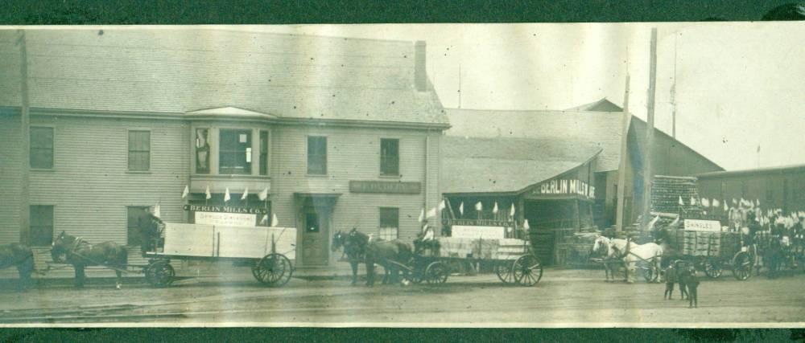

The Family Chronicle
No.37
________________

The above photo was taken in Berlin, New Hampshire. Although not dated, in the context of family information, it was probably taken between 1900 and 1910. Many Maritimers, including Black River residents, worked in the woods during this period, Whether or not any are in this photo is unclear. My Dad, Elmer Glendenning, had crews in the Maine and New Hampshire woods during this period; these may be some of his teams but I do not know for sure. In the early part of the century, I am told that there were three trains each day leaving Prince Edward Island and making connections with trains to the “Boston States”. I would welcome information or photos about others from our area that worked in the woods at this time.
Mention of a blacksmith shop struck a chord with Donald Edge who remembers the blacksmith shop operated in Upper Black River by John Dick. Donald says that he visited John Dick’s also to have a tooth pulled and a fishhook removed from a finger.
At one time, Black River had a resident dentist in the person of Doug Dower. His office was set up David Murdoch’s house on the north side of the river just below Uncle Jack Godfrey’s. I cannot recall whether this was a full-time or part time office. I do remember, though, that Cameron Russell, my brother-in-law, went to him one Sunday afternoon to have a tooth extracted – extracted, as I recall, without the aid of laughing gas or freezing; Norman remembers going to Doug Dower also on Sunday. I think that he soon closed his office and moved to Chatham. Years later, he had a fishing/ hunting camp on the river just above the Horton’s Creek bridge.
I am interested in the fact that so many of the Glendennings and Watlings, lived and worked in the USA. On the Watling side, Mum, Jane, went to Portland just before her 18th birthday; Uncle Jack worked in the Boston area and eventually retired to an Island near Portland, Uncle George lived in Portland for a while but also worked in Tennessee and Virginia before moving to New Hampshire; Aunt Janet worked at the Waltham watch factory but returned to Black River, Uncle Jim worked for a number of years in a chemists/ photography shop in Portland but came back to Little Branch after his father died; Uncle Ern worked with Dad in Tennessee before enlisting in WW1.
On the Glendenning side, Dad, Elmer, operated a trucking business with his brothers in Portland and also lumbered in New Hampshire and likely Maine. After their marriage in 1910, Dad worked on construction sites in Tennessee, Connecticut, Virginia, Wisconsin, Alabama and Texas; Aunt Venetia lived near Portland and eventually moved to Florida; Uncle Guy went to school Dental school in the USA, worked in the USA and Peru and eventually settled in Florida; Uncle Chip worked for a number of years in Peru; Uncle Ray worked in Portland and may have worked in the woods in New Hampshire; Aunt Minnie lived most of her life on Long Island, Aunt Margaret finished high school in Portland, then took nurses training, she served as a nurse during WW1 and settled in Maine; Uncle Leonard lived for a number of years in Maine but returned to NB; Aunt Maude and Uncle Jim Cormier lived in New Hampshire but returned to NB.
My mother told of her arrival in Portland on January 24, 1908, a month before her 18th birthday. She arrived on the day the city hall burned. She was to stay with Uncle George. She arrived at the train station early in the morning but Uncle George did not show. Apparently he had come to the railway depot but he had been away for a number of years and did not recognize the grown, young woman in the station waiting room.
Less than three weeks later my Grandfather Glendenning died while visiting family in Portland. Mother knew, or knew of, the Glendennings by then and could have gone to the funeral. Instead, as I recall, she looked after someone’s children – children of Adam and Millie (Glendenning) MacLean. I have always been curious as to how Mum and Dad met.
I find it interesting that both sides of our family were so venturesome and would welcome information about members of the next generation who traveled to the USA to seek employment. I would be glad to print the information in future issues of the Chronicle.
I have three distinct recollections of going to the woods for the purpose of cutting wood – not just three days but three distinct experiences. The first, and earliest, was when I went for the outing but was not expected to be of help. I do remember melting the snow to make tea, eating sandwiches touched by frost, and moving around to keep warm.
The second experience would be going to the woods with John. I would be 14 – 16 at the time. Presumably that was when Norm and Ken were in the service. My role was a supportive one. I took my place on the end of the cross cut saw (being cautioned not to drag my feet), did some limbing, drove the horse when loading large logs and took one end when loading smaller pieces.
After trees were cut and cut into 12-16 foot pieces, they were pulled to the side of the wood road. Skids were placed with one end on the ground in front of the logs and the other end placed on top of the sled or the last row of logs on the sled. A chain was placed around the log so that the horse moved forward at right angles to the sled, which caused the log to roll up onto the sled. Not surprising, there was/is a science to building a large load – as there is to building a large load of loose hay. Although John expected me to do my share, he did not ask more than I could handle. He also ensured that I was warm and dry and always had a horse rug under me when sitting on cold logs (This, as I recall, was to minimize the likelihood of piles.)
The next experiences, as I recall, were after Norm returned from the service. I remember especially the warm, sunny February and March days. It still involved being on the end of a cross cut saw and all of the other work but now I was older, stronger and experienced. Norm was quite competitive and we used to make a game out of determining where a tree would fall, guessing the length of a log or tree, etc.
We always used a team of horses and a bobsled – two sleds hooked together with crossed chains. A bobsled allowed for larger and longer loads and gave maximum flexibility over rough wood roads. I have many positive memories of my woods experiences: sitting on the sled with my feet on the runner, folding the horse rug over the axe head and using it as a cushion, sitting on top of a load of logs on the way home, John singing hymns as we came home on a snowy evening, dodging the snow from snow-laden bows as we traveled to and from the woods, being able to identify spruce, fir, maple, beech and ash although there weren’t many of the latter, pine although we rarely cut those, coming out of the woods and seeing the light at home, unhitching the horses and taking off the harness in the barn, the fires to make tea although this was later replaced by thermos bottles, the sound of the horse bells, the creaking loads as the snaked over the hummocks, turns and dips in the road and the crunch of the runners on the crisp snow.
The Chronicle is an occasional newsletter published by Don Glendenning It is intended to solicit and provide information about family tree matters. Comments, enquiries and information may be sent to 62 Queen Elizabeth Drive, Charlottetown, PEI, C1A 3A9. Tel: 902-892-5859 Email: dglende @attglobal.net. Feel free to pass along copies of this newsletter.